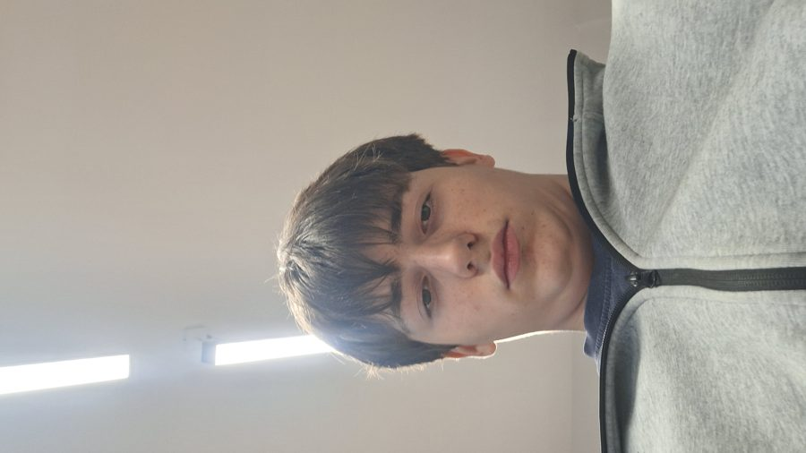
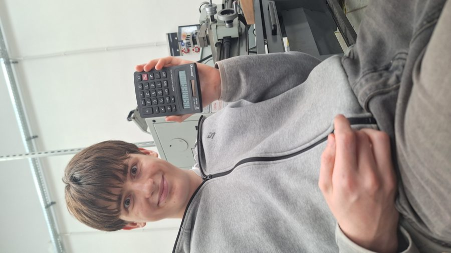
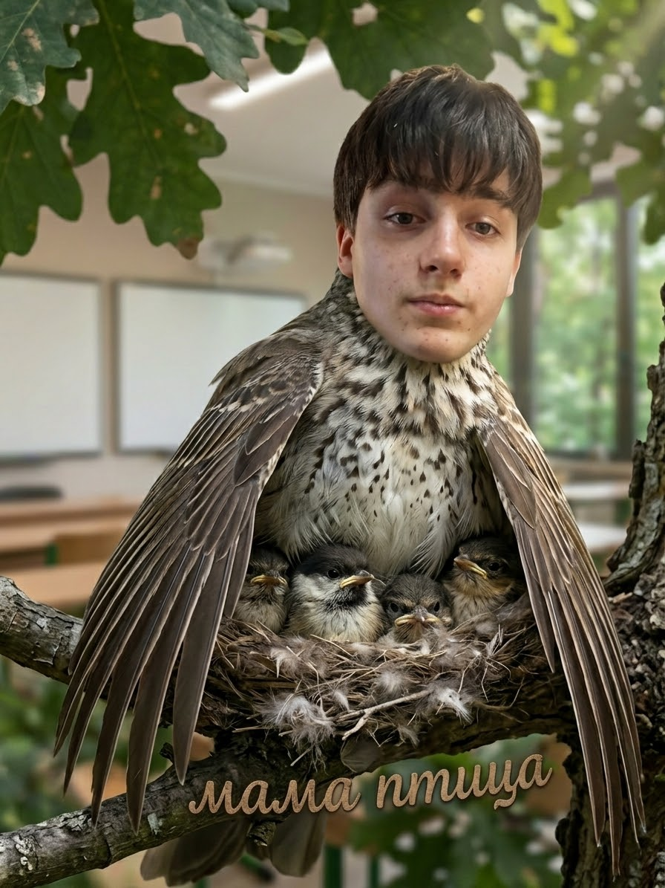

Четырко, Даниил
Дании́л Четы́рко — величайший игрок в истории Brawl Stars, обладатель всех существующих кубков и нескольких несуществующих. По оценкам экспертов, является единственным человеком, способным пройти «Столкновение» с закрытыми глазами, держа телефон вверх ногами. Создатели игры, по слухам, балансируют новых бравлеров, спрашивая у Даниила, «не слишком ли это просто для него».
Широко известен своей невозмутимостью: на портрете в карточке он изображён за 3 секунды до победы над командой из трёх игроков с рангом «Легенда» в одиночку.
Ранние годы
По легенде, Даниил впервые взял телефон в руки в возрасте 11 месяцев и сразу же поднял Эль Примо до 500 кубков. Первым его словом было не «мама», а «гиперзаряд»[1].
В школе Даниил проявлял выдающиеся способности к математике: с помощью обычного калькулятора он рассчитал оптимальную траекторию снаряда Брока с учётом ветра, вращения Земли и настроения противника. Результат вычислений не поместился на экран (см. фото).
Карьера
Восхождение
За первую неделю игры Даниил прошёл путь от 0 до 30 000 кубков, после чего игра вежливо попросила его «дать шанс другим». Даниил отказался.
Чемпионат мира
На Чемпионате мира по Brawl Stars Даниил выступал в составе команды из одного человека, потому что тиммейты, по его словам, «только мешали бы». Финальный матч длился 4 секунды. Комментаторы не успели произнести его фамилию полностью.
Тренерская деятельность
В настоящее время Даниил обучает молодых бравлеров (см. раздел «Мама Птица») и консультирует разработчиков по вопросам баланса.
Стиль игры
Аналитики выделяют следующие особенности игры Даниила:
- «Взгляд снизу» — фирменная техника, при которой Даниил смотрит на соперника снизу вверх с таким спокойствием, что тот сам выходит из матча (см. селфи в галерее).
- Чёлка-радар — по непроверенным данным, причёска Даниила улавливает перемещения врагов в кустах.
- Нулевой тильт — за всю карьеру Даниил ни разу не бросил телефон. Телефон бросали только его противники.
- Расчёт — перед каждым выстрелом Даниил проводит вычисления в уме, а для особо сложных случаев носит с собой калькулятор.
«Я не выигрываю матчи. Матчи сами проигрываются, когда видят меня в лобби».
— Даниил Четырко, интервью журналу «Бравл Ньюс»
Рекорды
| Рекорд | Значение | Статус |
|---|---|---|
| Больше всего кубков | ∞ + 1 | Не побит |
| Самый быстрый «Захват кристаллов» | 0,8 сек | Не побит |
| Самое долгое выживание в «Столкновении» | Игра закончилась раньше, чем он | Не побит |
| Количество Звёздных дропов за день | Сервер Supercell перезагрузился | Под расследованием |
| Победы с бравлером 1-го уровня | Все | Не побит |
Феномен «Мама Птица»
Благодаря своей заботе о новичках Даниил получил в сообществе почётное прозвище «Мама Птица». Он лично выкормил и вырастил целый клан молодых игроков, которые теперь уверенно стоят на своих лапках в ранговых боях. Каждый вечер Даниил прилетает к ним в гнездо и рассказывает, как правильно контрить Мортиса[2].
Изображение, ставшее мемом (см. галерею), было признано «самой трогательной картинкой в истории бравл-сообщества».
В культуре
- В честь Даниила планировали назвать нового бравлера, но разработчики решили, что он будет слишком сильным.
- Фраза «Сыграл как Четырко» в сообществе означает «сыграл идеально».
- Слово «четырко» в некоторых кланах используется как единица измерения скилла. 1 четырко = 1000 обычных игроков.
Галерея



Примечания
- Мама Даниила. Личная беседа. — 2010.
- Мортис. «Я больше не выхожу в лобби, если там Даниил» // Бравл Ньюс. — 2026. — № 4.
- Сам Даниил, который говорит, что всё это правда.
Категории: Легенды Brawl Stars | Люди, которые никогда не проигрывали | Птицы